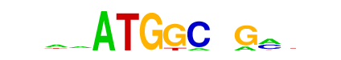
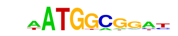

| p-value: | 1e-86 |
| log p-value: | -1.991e+02 |
| Information Content per bp: | 1.560 |
| Number of Target Sequences with motif | 733.0 |
| Percentage of Target Sequences with motif | 4.82% |
| Number of Background Sequences with motif | 521.9 |
| Percentage of Background Sequences with motif | 1.59% |
| Average Position of motif in Targets | 44.4 +/- 25.1bp |
| Average Position of motif in Background | 51.6 +/- 29.6bp |
| Strand Bias (log2 ratio + to - strand density) | 10.0 |
| Multiplicity (# of sites on avg that occur together) | 1.01 |
| Motif File: | file (matrix) reverse opposite |
| Rank | Match Score | Redundant Motif | P-value | log P-value | % of Targets | % of Background | Motif file |
| 1 | 0.833 | 1e-75 | -174.944905 | 2.78% | 0.62% | motif file (matrix) | |
| 2 | 0.934 | 1e-67 | -155.260340 | 4.17% | 1.48% | motif file (matrix) | |
| 3 | 0.782 |  | 1e-50 | -116.723560 | 2.74% | 0.88% | motif file (matrix) |
| 4 | 0.639 | 1e-40 | -93.268875 | 2.09% | 0.65% | motif file (matrix) | |
| 5 | 0.750 | 1e-37 | -87.086255 | 0.69% | 0.04% | motif file (matrix) | |
| 6 | 0.763 | 1e-35 | -81.935966 | 6.88% | 4.13% | motif file (matrix) | |
| 7 | 0.662 |  | 1e-28 | -66.489428 | 1.26% | 0.34% | motif file (matrix) |
| 8 | 0.729 | 1e-24 | -57.396340 | 0.43% | 0.02% | motif file (matrix) | |
| 9 | 0.838 | 1e-13 | -32.146312 | 1.17% | 0.51% | motif file (matrix) |